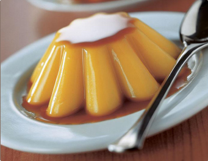

- 
- 1
- 2
- 3
- 4
- 5
פתרונות חכמים למטבח המודרני
אנחנו ב-FEIN COOK מאתרים מכונות מזון וציוד עזר למטבח הביתי והמקצועי מרחבי העולם. בוחרים את המכשירים המתקדמים בעולם באיכותם הגבוהה ובחדשנותם אשר משפרים את המקצוענות, מייעלים תהליכי עבודה וחוסכים זמן וכסף, תוך שאנחנו שמים דגש על האיכות הקולינרית של המנות.
מתכון פשוט וטוב
בצק עלים זריז
8 בנובמבר 2010
בצק עלים חמאתי וקל להכנה. לשימוש מיידי או להקפאה ושימוש חוזר כעבור חודש.

מאמרי מערכת

שיטת הבישול בואקום הולכת ותופסת מקום מרכזי בעולם הבישול
27 באוקטובר 2010
טקסט התוכן של המאמר הראשון. בטקסט המקוצר המופיע בעמוד הבית יוצגו תמיד ארבעת השורות...


הכותרת של המאמר השני
15 בינואר 2010
טקסט התוכן של המאמר השני. גם כאן מוצגות רק ארבעת השורות הראשונות של המאמר והתוכן ייקטע...
עולמות תוכן
התרמומיקס
בישול בואקום

פאקו-ג'ט